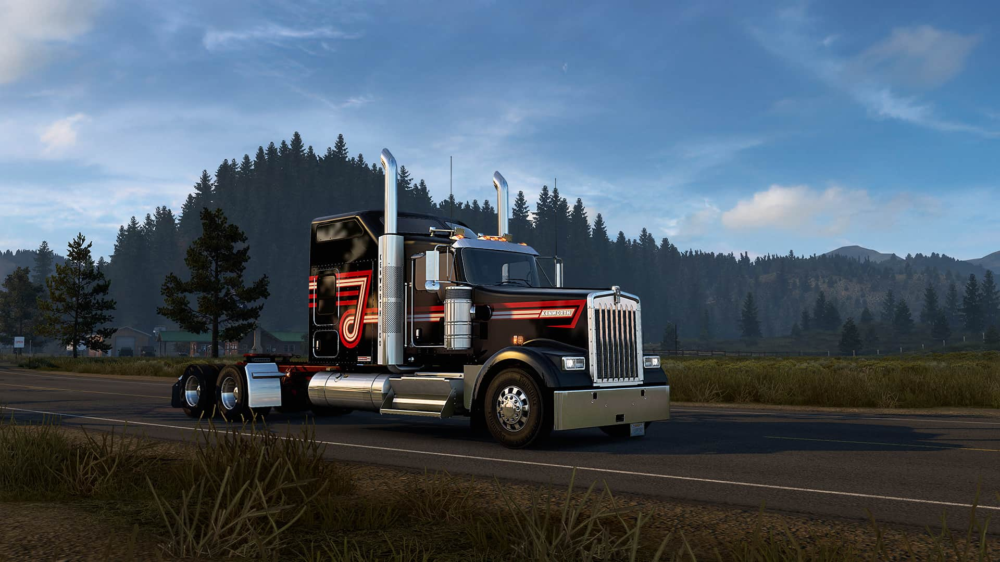
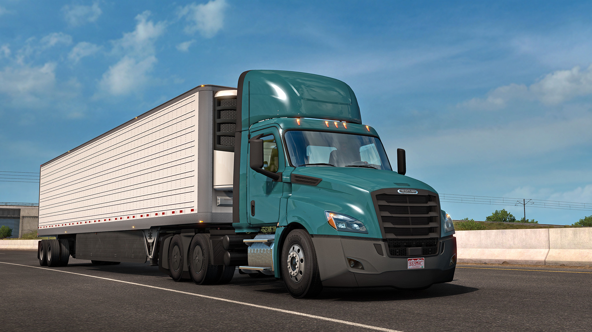

American Truck Simulator
Quick Overview
American Truck Simulator is a truck simulator game developed and published by SCS Software. It was announced as being in development in September 2013 and unveiled at the E3 2015. It was released on 2 February 2016 for Microsoft Windows, Linux, and macOS.
Experience legendary American trucks and deliver various cargoes across sunny California, sandy Nevada, and the Grand Canyon State of Arizona. American Truck Simulator takes you on a journey through the breathtaking landscapes and widely recognized landmarks around the States.
Game mechanics are based on the highly successful model from Euro Truck Simulator 2 and have been expanded with new features, creating the most captivating game experience from SCS Software.
American Truck Simulator puts you in the seat of a driver for hire entering the local freight market, making you work your way up to become an owner-operator, and go on to create one of the largest transportation companies in the United States.
